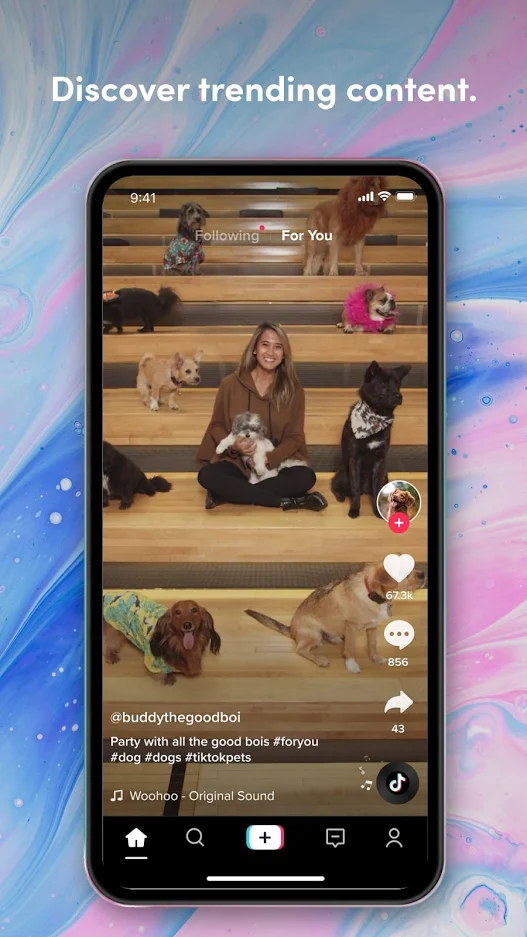
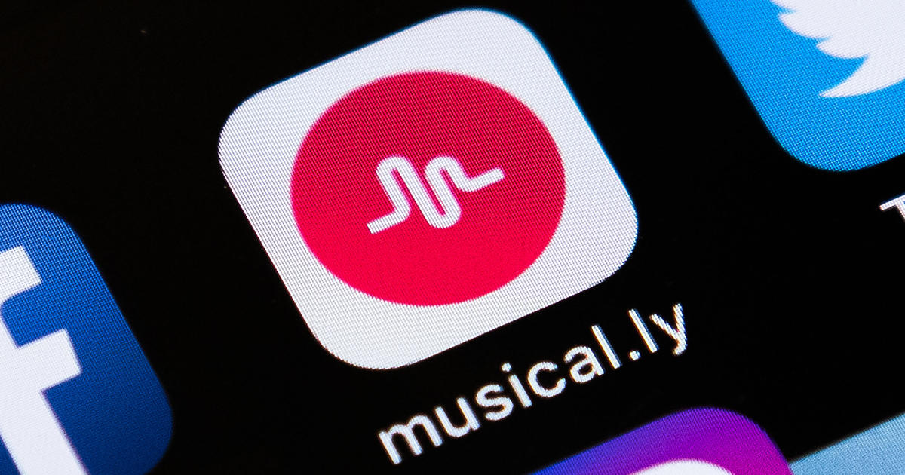
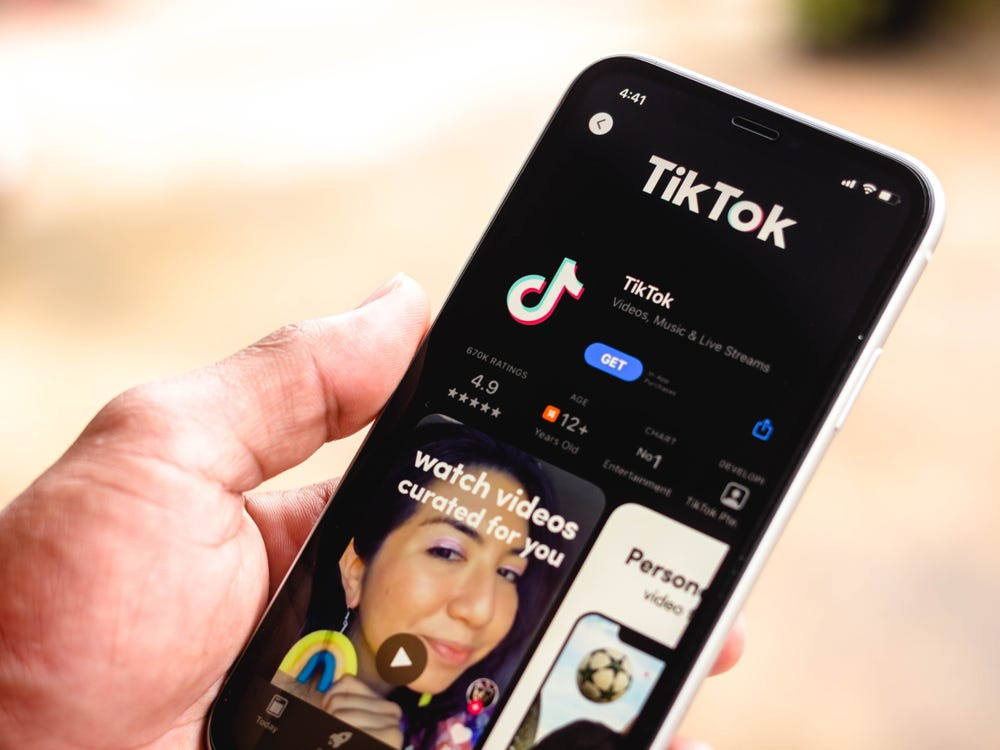

Understanding TikTok

Time and time again, we learn about another controversial trend that blew up on TikTok. While many of these trends are harmless and minor annoyances, it’s undeniable that the influence of TikTok is growing larger every day. In fact, TikTok was the third fastest growing brand in 2020, after Zoom, the main medium of online classes and work meetings since the start of the pandemic and Peacock, a streaming service under the name of the television giant NBC.
Overview
TikTok is a social networking service built on the sharing of videos up to a minute long. Unbeknownst to many users, TikTok is the international version of the China-exclusive app Douyin, which itself was formerly known as the app Musical.ly. Both TikTok and Douyin were developed by the company ByteDance.

How it Works
TikTok has always been protective about the secrets of their app, specifically about how their algorithm works. The algorithm is what gives the app’s For Your page (#fyp) its reputation for being scarily consistent in knowing the user and their type of content that they enjoy.
In 2020, due to fear that its app would get banned in the US, TikTok revealed a basic rundown of how its algorithm works.
Basically, the algorithm evaluates the quality of a video based on the users’ interests and disinterests, hashtags, music/sound choices, as well as the amount of time spent watching a video, language preference, country location, and even device type. This system is also the reason why the #fyp is able to recommend videos with very few views that nonetheless match the user’s interests. The app also visually scans videos for content that violate its rules.
